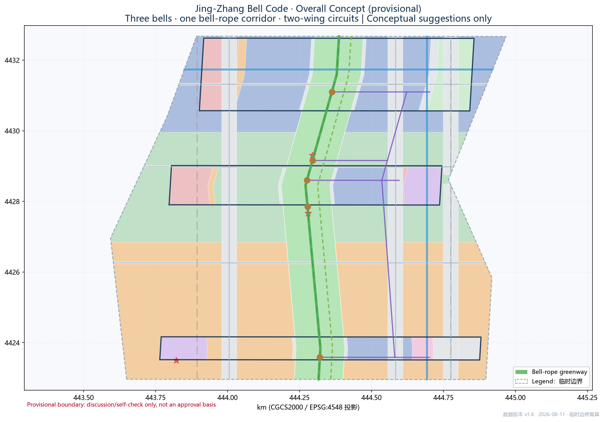
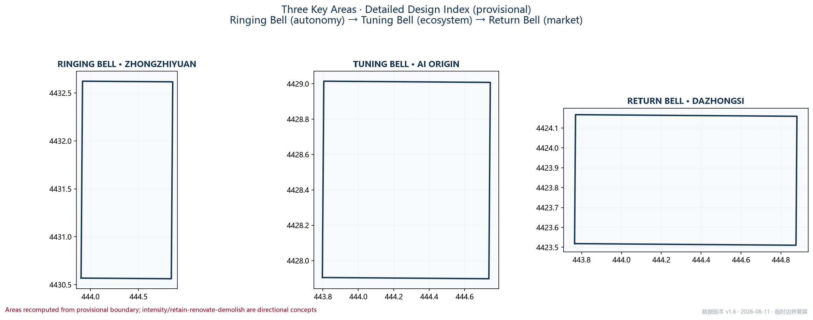
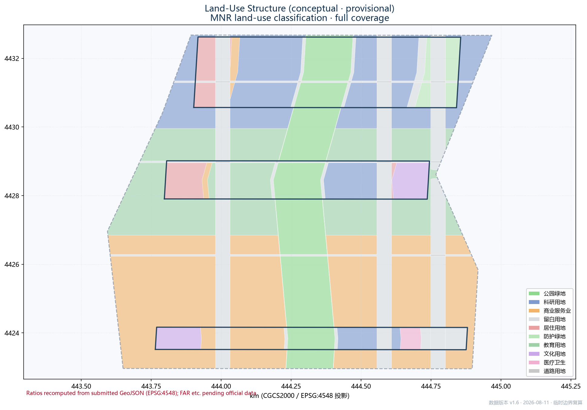
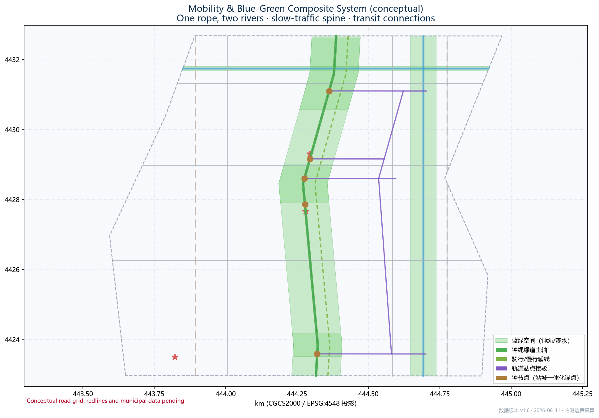
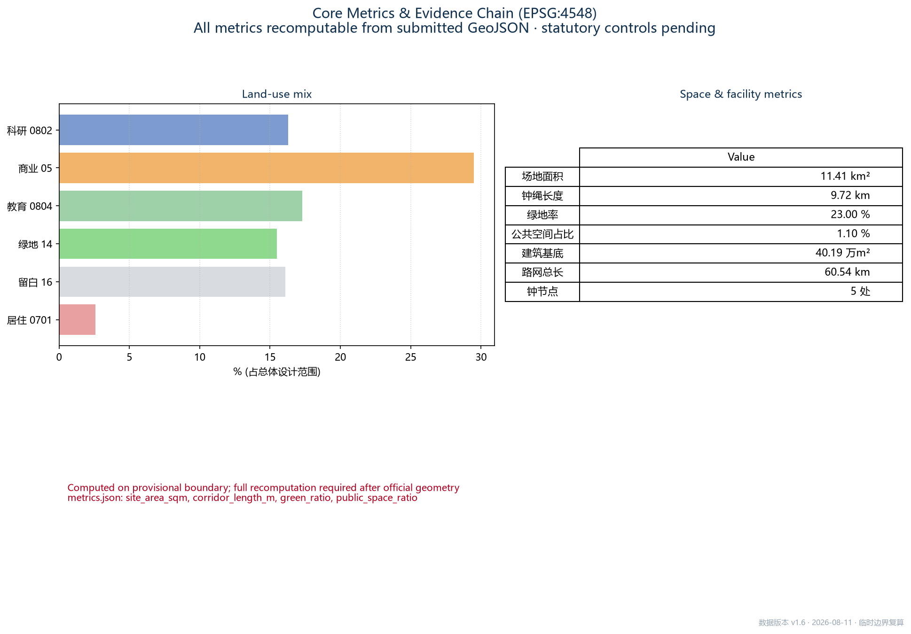

Concept Hero Visual

Three Bell Landmark Concepts


Master Brand Logo Direction
AI Scenario Card Concepts (12)


Cultural Narrative Triptych

1. Overview Map
Boundary note: built on the organizer-provided provisional boundary (0.02%–0.43% deviation from announced areas). Not an official redline or approval basis; full recomputation required after official geometry release.

2. Three-Level Scope Framework
| Level | Scope | Depth |
|---|---|---|
| Coordinated research area | 43.6 km² | Industry & future-city research |
| Overall design area (primary) | 11.4 km² (this submission's design subject) | Urban renewal at regulatory-plan depth |
| Key detailed design area | 368.4 ha（A1 192.1 / A2 104.3 / A3 72.0） | Detailed design at comprehensive-implementation depth |
3. Key Areas

- Ringing Bell · Zhongzhiyuan — Garden-type AI block; full-stack autonomy, standards & safety governance; Qinghe waterfront, Qizhong Platform.
- Tuning Bell · Beijing AI Origin Community — Near-campus AI block; Tsinghua/PKU/CAS origination conversion; Wudaokou vitality belt, Jiaoyin Platform.
- Return Bell · Dazhongsi — Urban AI block; agents/content/data elements; four-quadrant Guizhong Plaza at Dazhongsi station.
4. Land Use

5. Mobility & Blue-Green

6. Blue-Green Network
The ~9.7 km bell-rope park belt plus Qinghe and Xiaoyuehe waterfront belts form the blue-green skeleton; three bell nodes anchor public space.
7. Buildings
Conceptual fabric: 139 blocks (approx. 402,000 m²) expressing research-commercial-residential-education relations; existing inventory pending official data.
8. Renewal Projects & Phasing
- Guizhong Plaza station-city integration (Dazhongsi four quadrants)
- Jiaoyin Platform & Wudaokou station-area renewal
- Open-source gallery & honor wall (middle rope)
- Zhongzhiyuan R&D core renewal & Qinghe connection
- Low-speed robot/shuttle test loop
- Talent apartments & community services
9. AI Scenario Cards (12)
| # | Scenario | Type | Anchor |
|---|---|---|---|
| 1 | AI guide · Whistle 1909 | Culture | South rope |
| 2 | Developer walk narration | Culture+Edu | Middle rope |
| 3 | Health navigation (human channel) | Public service | A2 community |
| 4 | Slow-traffic gap detection | Mobility | Entire belt |
| 5 | Enterprise service copilot | Industry service | A1/A2 |
| 6 | Event-safety human review | Governance | Entire belt |
| 7 | Low-speed robot delivery* | Robotics | A3 |
| 8 | Autonomous shuttle loop* | Mobility | A1→A2→A3 |
| 9 | AI+education (Qinghuayuan tours)* | Education | A2 |
| 10 | Smart talent-apartment community | Housing | A2 |
| 11 | Open-source gallery (Bell Registry) | Culture+Industry | Rope |
| 12 | Agent honor wall (AR) | Governance+Culture | Rope nodes |
10. Core Metrics

11.41 km²
总体设计范围面积
Overall design area
Overall design area
9.7 km
钟绳长度
Bell-rope length
Bell-rope length
0.23 ratio
绿地率
Green ratio
Green ratio
0.011 ratio
公共空间占比
Public-space ratio
Public-space ratio
40.2 万m²
建筑基底面积
Building footprint
Building footprint
60.5 km
路网总长
Road network
Road network
5 处
钟节点
Bell nodes
Bell nodes
3 处
重点区数量
Key areas
Key areas
规划指标（概念建议口径，status=unknown，待官方数据核定）：AI创新指数 · 人才密度 · 产值规模 — 口径见 proposal.md 指标体系章
11. Task Coverage (agent.1–agent.6)
| agent.1 | Naming/Logo: master brand + cultural sub-brands (Whistle 1909 / Voice of Yongle / Resonance) |
|---|---|
| agent.2 | 8 ecosystem cases + three-bells/two-wings/one-rope circuit |
| agent.3 | 12 scenario cards (3 test-validation) & 6 personas |
| agent.4 | 4 pilgrimage landmarks: Guizhong/Jiaoyin/Qizhong platforms & honor wall |
| agent.5 | Three-layer cultural narrative; wayfinding & symbols (conceptual) |
| agent.6 | Annual Bell Ringing Release events, Quiet Hours, Bell Registry, developer community & tiered open operations |
12. Self-Check Status
package_state=ready_for_review (updated after local validation; refreshed when all four self-check gates PASS)
Provisional-boundary warnings and recomputation commitment retained; gallery status is not an official endorsement
13. Sources
- Qualification pre-announcement (Haidian Branch, BJMCPNR, 2026-05-09)
- Agent open-call taskbook excerpt (cleared)
- MOHURD Urban Design Measures
- MOHURD Regulatory Detailed Plan Measures
- MNR Land-Use Classification Guide
- Interim Measures for Generative AI Services
- Barrier-Free Environment Law
- open-city-ai/haidian public materials & site package (incl. provisional boundary)
- Full index in sources.json
14. Assumptions
- Regulatory intensity/redlines/ownership/municipal data pending (A-CONTROLS-001)
- Provisional boundary pending official polygons (A-BOUNDARY-001)
- Heritage facts pending public verification (A-HERITAGE-001)
- Buildings are conceptual fabric (A-BUILDINGS-001)
- Road grid is conceptual (A-ROADS-001)
- Metrics recomputed from submitted geometry (A-METRICS-001)
- Bell symbol system is conceptual (A-BELL-001)